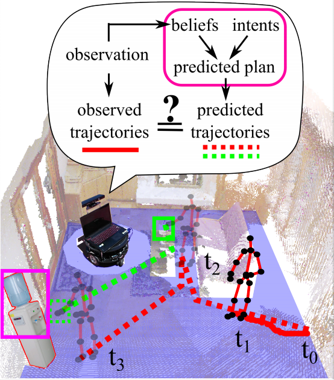

<div class="publication">
  <div class="pub-left-col">
  <a href="assets/AI-HRI_2015_paper_28.pdf" target="_blank"></a>
  </div>
  <div class="pub-right-col">
  <h3><a href="assets/AI-HRI_2015_paper_28.pdf" target="_blank">(2015) Represent and Infer Human Theory of Mind for Human-Robot Interaction</a></h3>
  Yibiao Zhao, <b>Steven Holtzen</b>, Tao Gao <br/>
  Artificial Intelligence and Human-Robot Interaction (AAAI Fall Symposium Series)
  </div>
</div>